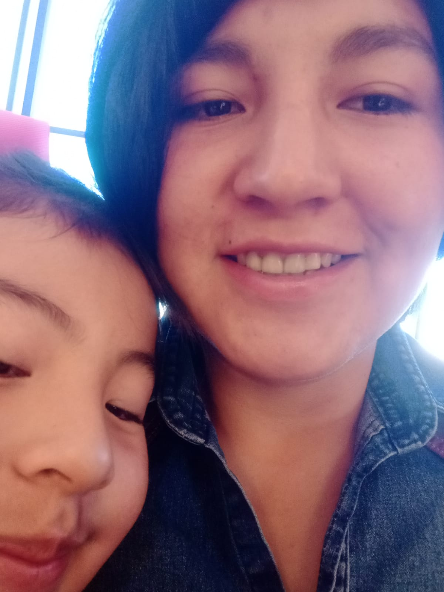

"Cada momento contigo es un recuerdo que guardo en mi corazón. Este video es un reflejo de nuestro viaje juntos, un viaje lleno de amor, risas y sueños compartidos. Te amo, Gaby."
"Desde aquel 22 de julio, mi vida se transformó en una hermosa aventura que no quiero que termine nunca. El destino nos unió de manera inesperada, y desde entonces, cada día a tu lado ha sido mágico. Luego, el 26 de julio, dimos ese gran paso y nos convertimos en pareja. Desde ese momento, el amor ha fluido entre nosotros como un río imparable
el hecho de conocerla a Zoe, que le hables de mi me hace sentir querido y especial, las adoro a las dos son mis amores para toda la vida ❤️❤️❤️ .

Nos sentimos atraídos mutuamente, y es increíble cómo nos complementamos en cada aspecto de nuestras vidas. Cada día contigo es una nueva oportunidad para aprender, crecer y amar más profundamente. Gracias por estar aquí, compartiendo este primer mes juntos. Estoy seguro de que esto es solo el comienzo de un viaje largo y maravilloso, donde los meses se convertirán en años, y algún día, seremos esos viejitos que se siguen amando con la misma intensidad."